Unless noted otherwise, every result above uses unit stride (incx = incy = 1) — the normal case, and the coalesced, best-case GPU access pattern. Real usage sometimes passes a non-unit stride (e.g. operating on a row or column of a larger matrix, where incx = lda), which breaks memory coalescing and costs measurably more. This section sweeps a few representative strides to characterize that cost separately, collapsed below by default — expand a stride to see its table and chart.
stride.strsv.c — CUDA / cuBLAS stride-sweep reference script
Transpose sweep
Unless noted otherwise, every result above uses trans = "no-transpose". trans = "transpose" reads A with a cross-thread lda-strided mirror pattern instead of a coalesced one, and the gap grows with n — collapsed below by default, expand a trans value to see its table and chart.
trans.strsv.c — CUDA / cuBLAS trans-sweep reference script
Uplo sweep
Unless noted otherwise, every result above uses uplo = "lower". Real workgroups dispatch in increasing index order, so uplo = "upper" front-loads the heaviest rows first (worse — long-running heavy workgroups have nothing to overlap with) while lower back-loads them (better — light rows clear fast, the heavy tail gets full GPU to itself) — collapsed below by default, expand a uplo value to see its table and chart.
uplo.strsv.c — CUDA / cuBLAS uplo-sweep reference script
Lda sweep
Unless noted otherwise, every result above uses a tight lda (no padding). Padding the row stride changes throughput here — the exact mechanism and shape of that effect is routine-specific — collapsed below by default, expand a pad value to see its table and chart.
lda.strsv.c — CUDA / cuBLAS lda-sweep reference script
diag sweep
A unit diagonal lets the kernel skip the diagonal load — and for the triangular solve, the reciprocal as well — so any difference here is exactly that skipped work.
diag.strsv.c — CUDA / cuBLAS diag-sweep reference script
layout sweep
Column-major swaps the effective m/n and flips the transpose flag internally, changing which axis is contiguous and therefore how the matrix reads coalesce. wgblas-only: cuBLAS is column-major and has no layout argument, so there is no reference curve to compare against.
Benchmark results for strsv on Nvidia Geforce Gtx 1650.
Nvidia Geforce Gtx 1650 — wgblas vs cuBLAS
See also
Stride sweep
Unless noted otherwise, every result above uses unit stride (
incx = incy = 1) — the normal case, and the coalesced, best-case GPU access pattern. Real usage sometimes passes a non-unit stride (e.g. operating on a row or column of a larger matrix, whereincx = lda), which breaks memory coalescing and costs measurably more. This section sweeps a few representative strides to characterize that cost separately, collapsed below by default — expand a stride to see its table and chart.Nvidia Geforce Gtx 1650 — stride = 4
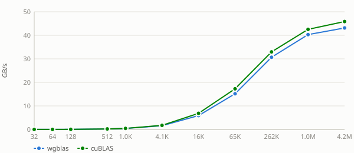
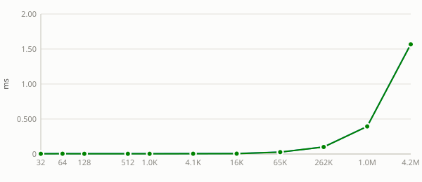
Nvidia Geforce Gtx 1650 — stride = 32
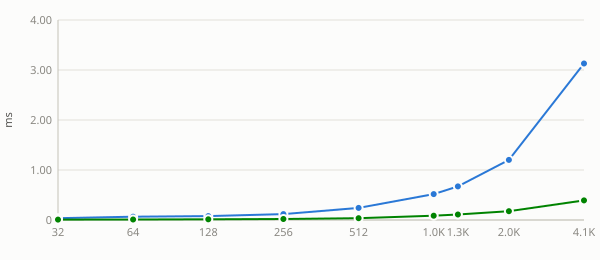
Nvidia Geforce Gtx 1650 — stride = 256
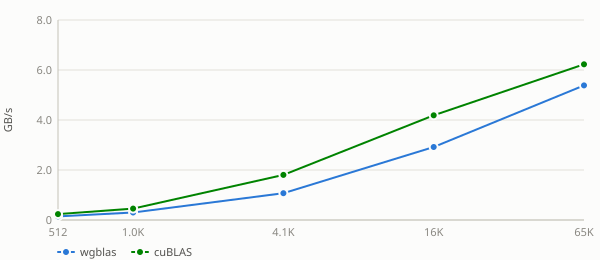
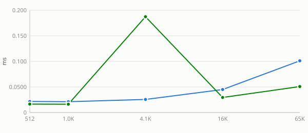
See also:
Transpose sweep
Unless noted otherwise, every result above uses
trans = "no-transpose".trans = "transpose"reads A with a cross-threadlda-strided mirror pattern instead of a coalesced one, and the gap grows withn— collapsed below by default, expand atransvalue to see its table and chart.Nvidia Geforce Gtx 1650 — trans = no-transpose
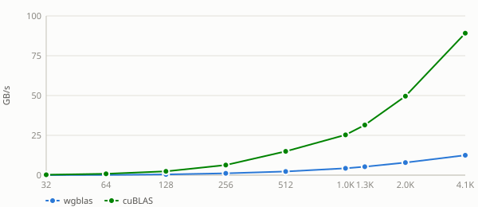
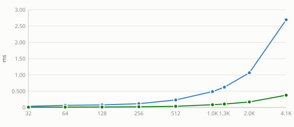
Nvidia Geforce Gtx 1650 — trans = transpose
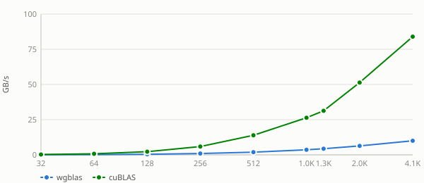
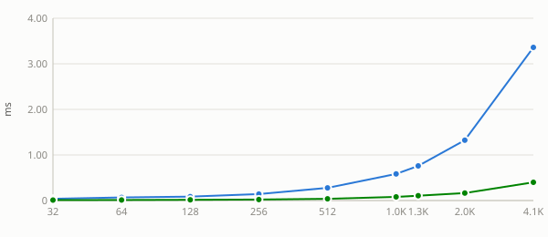
See also:
Uplo sweep
Unless noted otherwise, every result above uses
uplo = "lower". Real workgroups dispatch in increasing index order, souplo = "upper"front-loads the heaviest rows first (worse — long-running heavy workgroups have nothing to overlap with) whilelowerback-loads them (better — light rows clear fast, the heavy tail gets full GPU to itself) — collapsed below by default, expand auplovalue to see its table and chart.Nvidia Geforce Gtx 1650 — uplo = lower
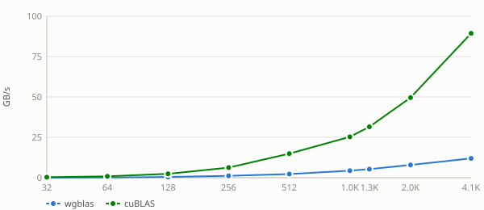
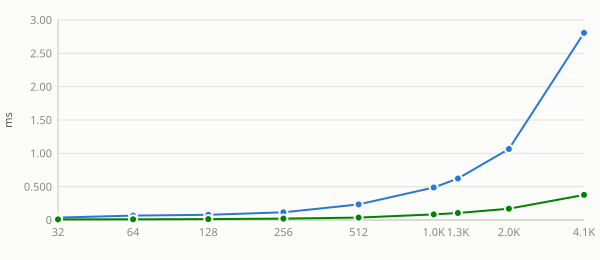
Nvidia Geforce Gtx 1650 — uplo = upper
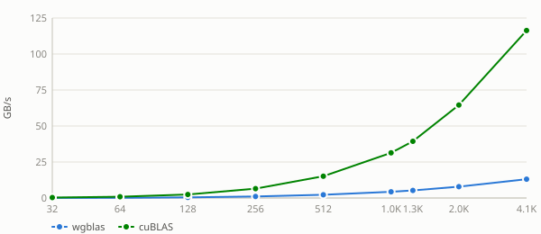
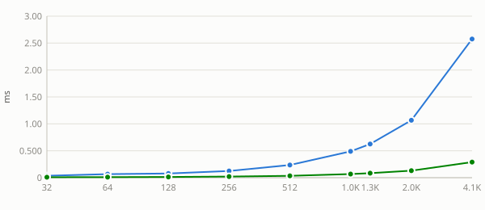
See also:
Lda sweep
Unless noted otherwise, every result above uses a tight
lda(no padding). Padding the row stride changes throughput here — the exact mechanism and shape of that effect is routine-specific — collapsed below by default, expand apadvalue to see its table and chart.Nvidia Geforce Gtx 1650 — pad = 0
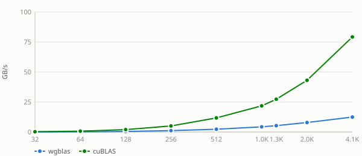
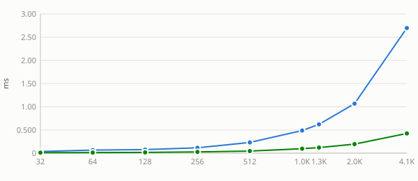
Nvidia Geforce Gtx 1650 — pad = 1
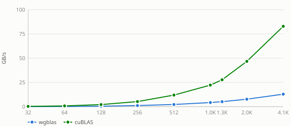
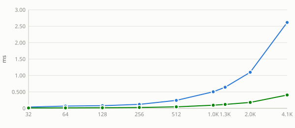
Nvidia Geforce Gtx 1650 — pad = 8
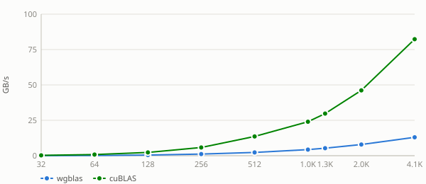
Nvidia Geforce Gtx 1650 — pad = 16
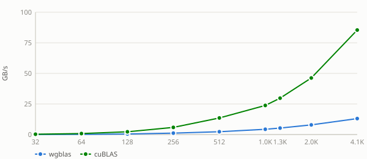
Nvidia Geforce Gtx 1650 — pad = 32
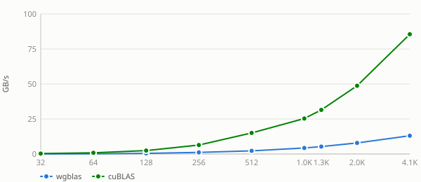
Nvidia Geforce Gtx 1650 — pad = 48
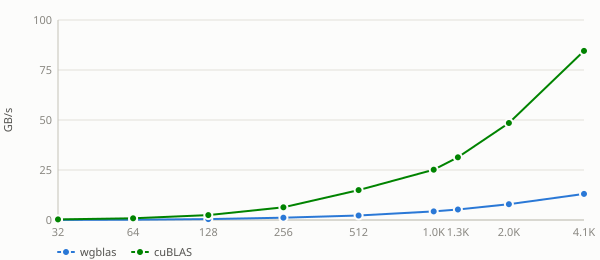
Nvidia Geforce Gtx 1650 — pad = 64
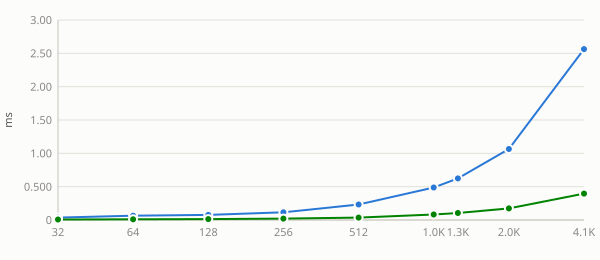
Nvidia Geforce Gtx 1650 — pad = 128
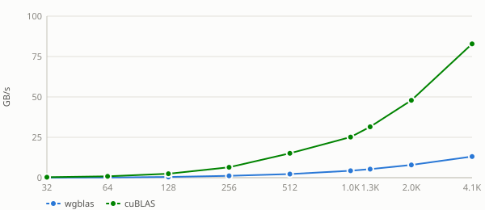
See also:
diag sweep
A unit diagonal lets the kernel skip the diagonal load — and for the triangular solve, the reciprocal as well — so any difference here is exactly that skipped work.
Nvidia Geforce Gtx 1650 — diag = non-unit
Nvidia Geforce Gtx 1650 — diag = unit
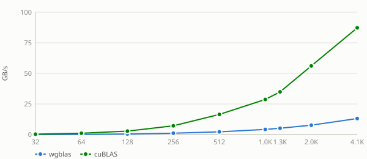
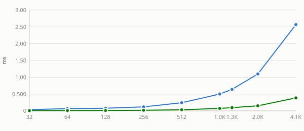
See also:
layout sweep
Column-major swaps the effective
m/nand flips the transpose flag internally, changing which axis is contiguous and therefore how the matrix reads coalesce. wgblas-only: cuBLAS is column-major and has no layout argument, so there is no reference curve to compare against.Nvidia Geforce Gtx 1650 — layout = column-major
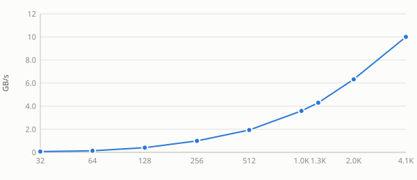
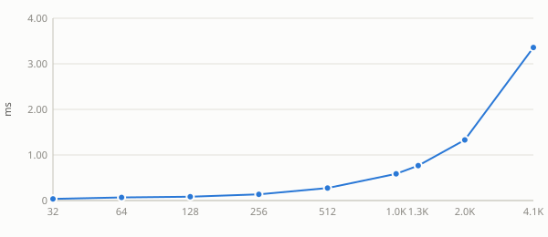
Nvidia Geforce Gtx 1650 — layout = row-major
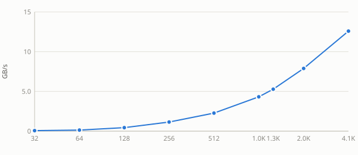
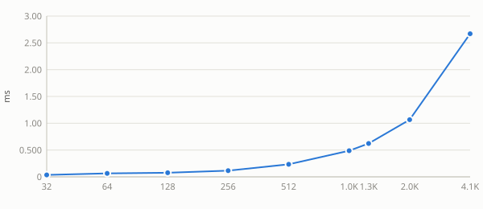
See also: